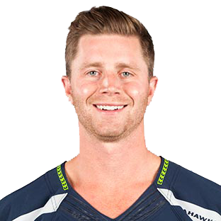

Home
Offense
Defense
Special Teams
Staff
SPECIAL TEAMS

© Copyright
Seahawks.com, 2015
Player
No.
Pos.
Height
Weight
Age
Years
School
Steven Hauschka
4
K
6-4
210
30
8
N. Carolina State
Jon Ryan
9
P
6-0
217
33
10
Regina (Canada)
Tyler Lockett
16
WR
5-10
182
23
R
Kansas State
Clint Gresham
49
LS
6-3
260
29
6
Texas Christian